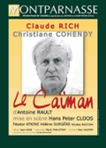

Le Caïman

Hier je suis allé voir « Le Caïman » au Théâtre Montparnasse. Cette riante comédie raconte la nuit fatale d’un philosophe maniaco-dépressif, maître à penser d’une génération marxiste, et de sa femme militante communiste. Inspiré par l’histoire de Louis Althusser qui étrangla sa femme en 1980 dans leur appartement de la rue d’Ulm, la pièce est une succession de confrontations entre le philosophe et sa soeur bigote, son psy renommé, son ancien élève devenu prêtre, et surtout sa femme. Au-delà de l’histoire d’un couple étouffant, c’est le thème du rapport de force qui est au coeur de ces dialogues : rapport de force entre les deux femmes, entre le psy qui philosophe et le philosophe qui connaît trop bien les mécanismes de l’analyse, entre l’ancien élève et son professeur qui obtient de lui une entrevue avec le Pape uniquement afin d’exercer son pouvoir, entre le maître à penser et sa femme trop prévenante, qui le pousse à revenir sur le devant de la scène pour y défendre ses idées à elle. Le philosophe fait semblant, joue des rôles pour séduire et dominer son petit monde, mais la conclusion tragique n’est finalement que la démonstration du pouvoir de sa femme. Les acteurs, notamment Claude Rich et Christiane Cohendy, sont excellents, la mise en scène sobre et belle, et cette pièce noire qui vous prend aux tripes est de celles dont on aimerait avoir le texte pour le relire.